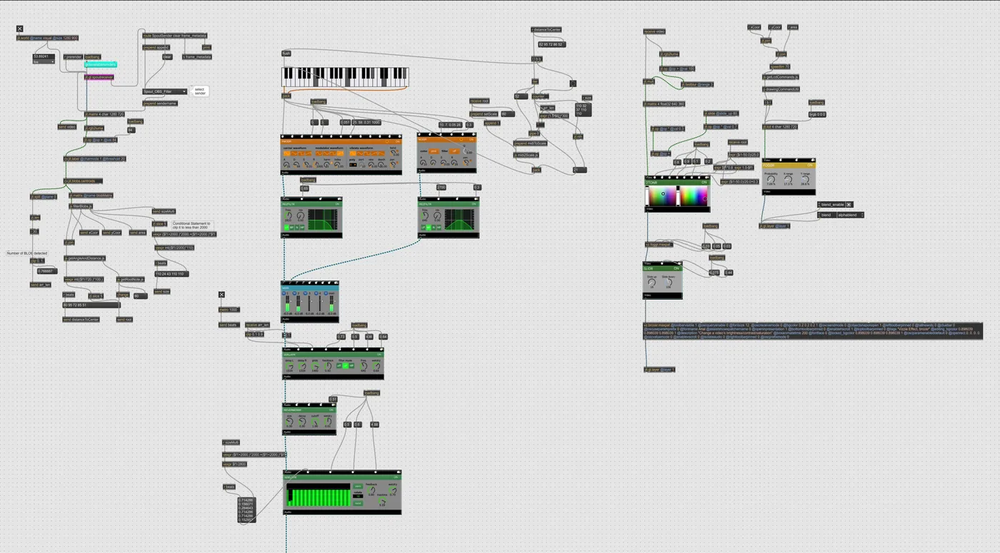
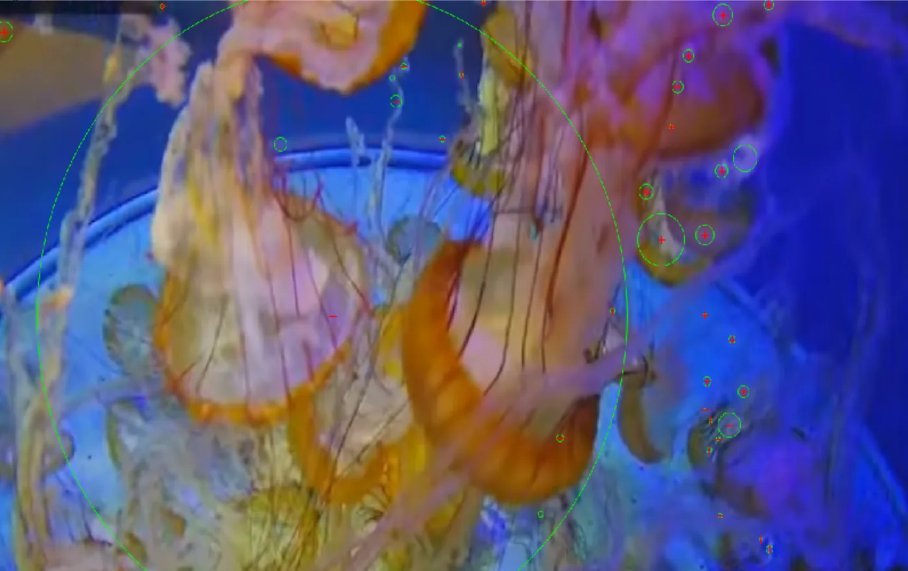
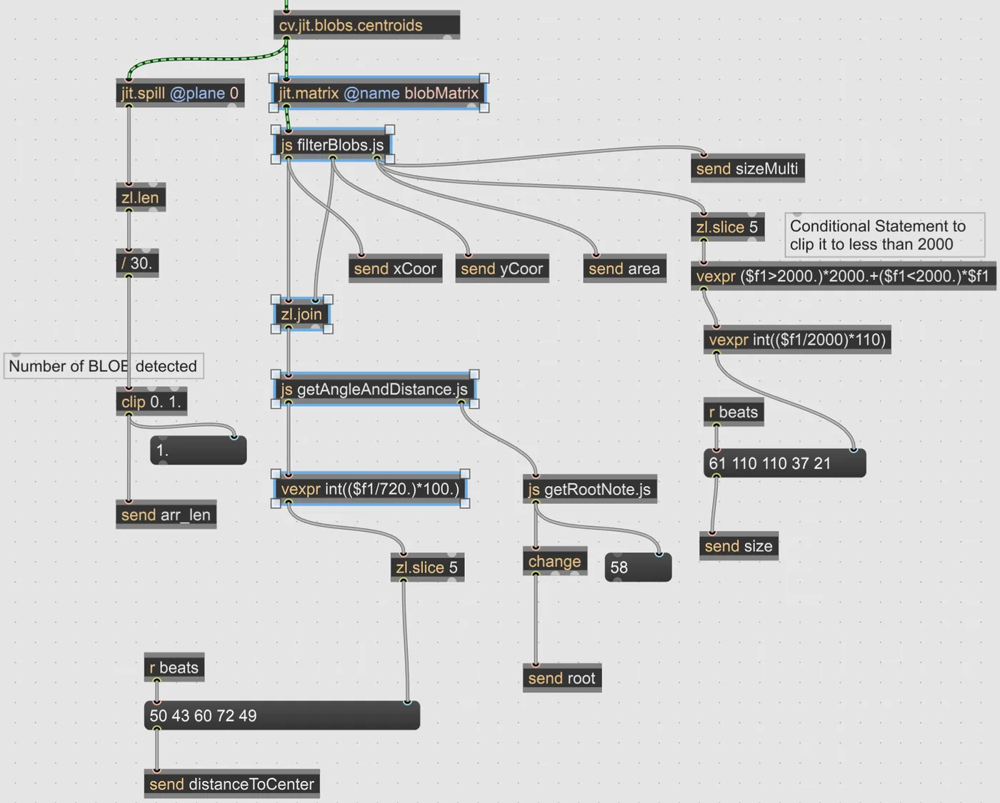
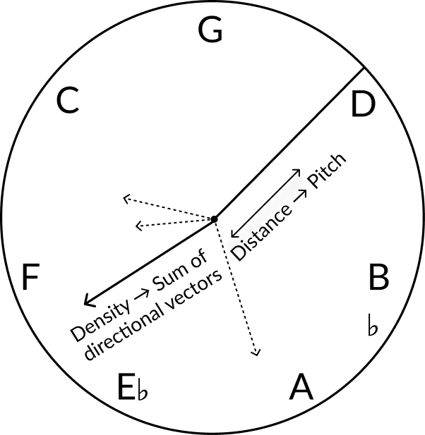
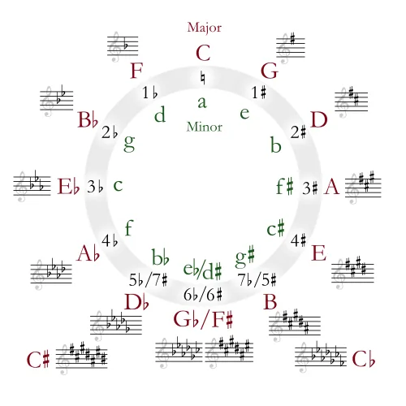
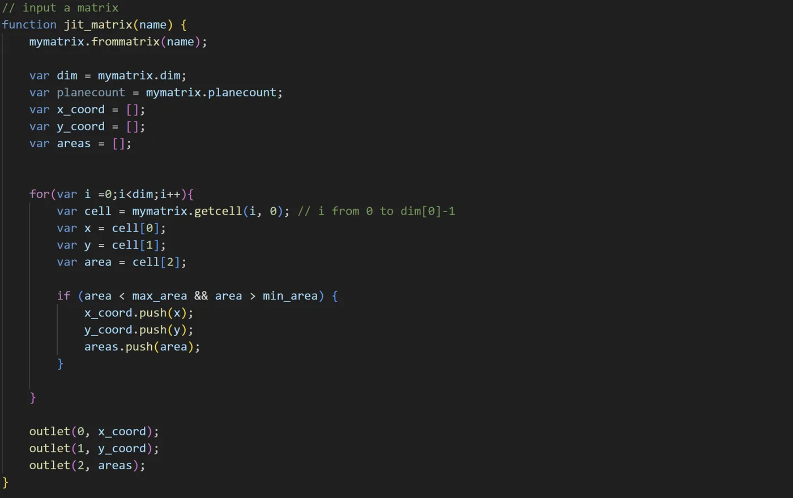
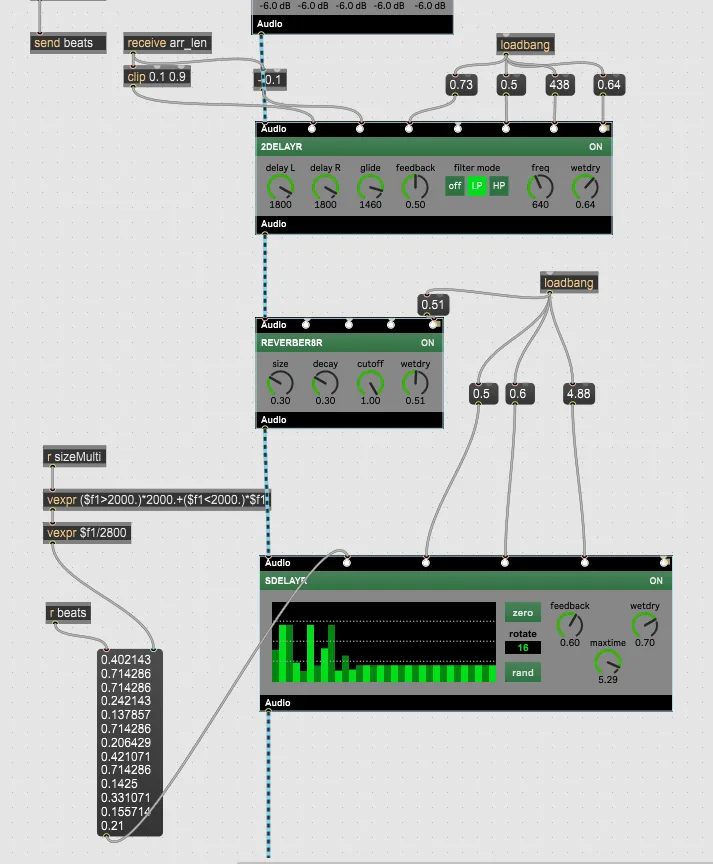
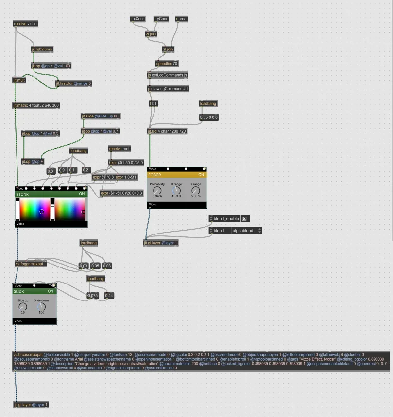
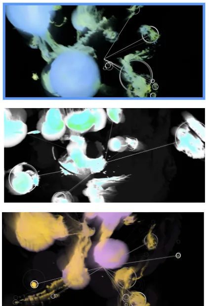

Design and Research
Guiding Framework
- What data can be extracted to encapsulate the key characteristics of the subject we want to sonify?
- What kind of sound is consistent with our perception of the subject — and what are its defining characteristics: harmony, timbre, amplitude, melody?
- How does the data-to-sound transduction process deepen our perception of both the subject and the data?
We don't perceive data directly — we understand images, sound, and texture, and form spontaneous responses from them. Non Aquarium uses data solely as a bridge, augmenting perception through transduction while exploring synesthesia: the synergistic effect of experiencing cohesive sound and visuals together.
I studied existing data sonification projects to understand how artists and researchers approach these questions. Tom Hamilton's album London Fix sonifies the London Stock Exchange using clean sine waves — pitch changes with the price of gold, so rapid fluctuations produce audible leaps that augment our perception of market volatility. David First transposed the Schumann resonance upward for live performance. Though its original frequency was inaudible, listeners can still perceive its relationships with other sounds in the composition.
Production
The first step was tracking jellyfish movement. Because the camera position is fixed, the only moving elements in the feed are the jellyfish. I used BLOB detection from the cv.jit library for real-time computation with minimal latency. This returns the x/y coordinates and area of each detected blob, along with the total blob count.


Designing the sound is the most critical part of this project — specifically, how to map detected data onto the characteristics of sound. The overall logic is shown below.

Note Triggering
To achieve a mesmerizing, serene aesthetic, I layered a waveform synth with a noise generator and applied filters. A constant metro drives the sound generation module.
Many blobs are detected even after filtering, but human ears cannot process so many simultaneous notes. Only the first 5 blobs trigger notes, played in an arpeggiated manner so listeners can follow individual notes rather than getting lost in dense chords. The arpeggiation also creates a flow that mirrors the jellyfish's organic movement.
Pitch, Scale, and Velocity
Pitch and scale are the key elements that give the composition its melodic character. The melody should shift scales and notes gradually — dynamic but never perceived as chaotic.
The composition technique draws from the circle of fifths, which felt most natural here. Viewers don't perceive the raw x/y coordinates of the jellyfish, but rather the distance between each jellyfish and the camera center — a circular spatial structure that maps intuitively to the circle of fifths. As jellyfish swim smoothly, crossing different regions maps naturally to scale transitions.

One challenge: jellyfish swim quite fast, potentially jumping from C to G♭ in a short span and creating dissonant transitions. With input from Octavio Figueroa Moya, I decided to use only the upper arc of the cycle. This reduces the frequency of transitions, and moving between E♭ and A produces a pleasantly jazzy quality.
With this, the complete sound generation logic is: distance d from each blob to the center determines pitch; blob size determines velocity. For each blob, I compute a vector from the video center — the sum of all vectors selects a scale using the truncated circle of fifths, and all notes are quantized to that scale. This involves several JavaScript modules and trigonometric calculations.

Additional Sound Effects
Reverb, delay, and spectral delay add complexity and layering. Delay follows an intuitive logic: more jellyfish means more delay layers, so delay amount is modulated by blob array length. Spectral delay further shapes the texture by transforming the frequency content of each delayed signal. The complete effects chain is shown on the right.

Visual design elements are also incorporated to create a cohesive audiovisual experience.

